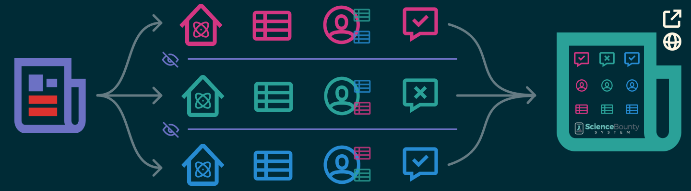

Science Bounty System is a global, decentralized marketplace for paying scientists to perform scientific due diligence.
Our goal is to improve the scientific ecosystem for all parties involved: academic, governmental, commercial, and the public.
The primary source of basic science research grant funding is institutional. This includes governments, grant-making foundations, and private companies’ R&D budget.
Institutions will be able create Science Bounties on isolated, already-published journal articles and currently active studies.
Deconstruction Bounties
Given a study, have independent expert researchers with relevant experience comb through it to evaluate methods and bias
Construction Bounties
Given a study and Deconstruction Bounty Report, have (different) independent expert researchers construct a solid experiment to test the original hypothesis
Reproduction Bounties
Given a Construction Bounty Report and a complete experimental design, have multiple independent labs perform the experiment and report results
Through this mechanism Bounty funders can:
By leveraging (and compensating) the global academic community dedicated to Truth-seeking, we aim to realign economic and social incentives in the production of knowledge to reward good actors, punish bad actors, and allow all parties to make sound decisions around the use and application of science.
By reducing friction to and increasing the likelihood of uncovering flawed science, we aim to tighten the feedback loop on knowledge production for the benefit of the world.
Charles Jing
Jonathan Blackwood
Asish Thomas
Dalton Cole
James Risberg
MIT
UW
UAlberta
CDL